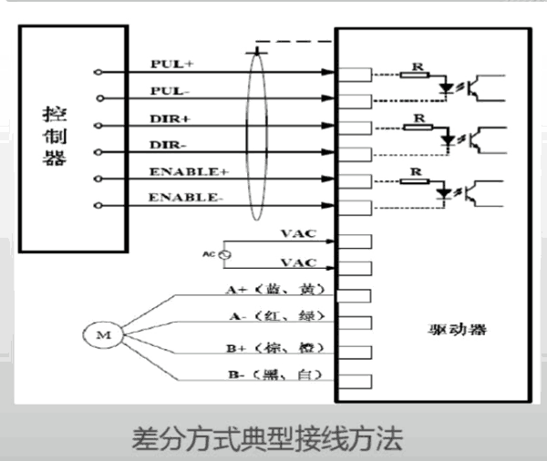
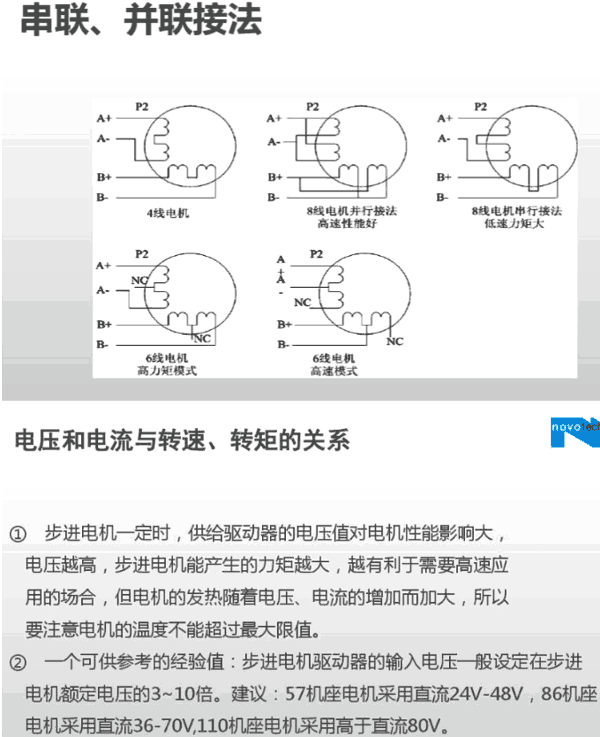
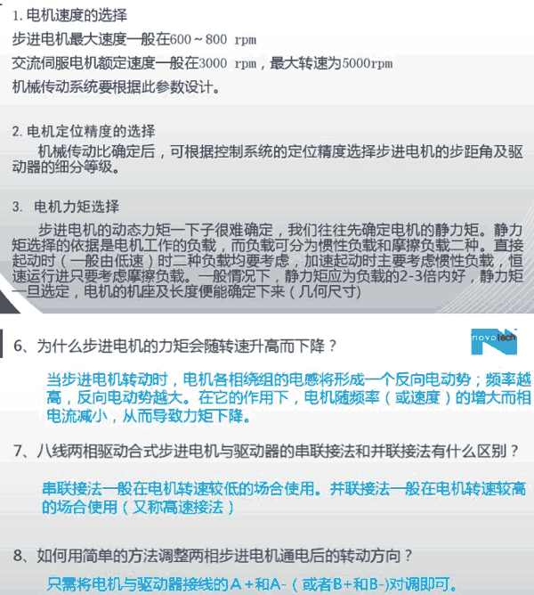
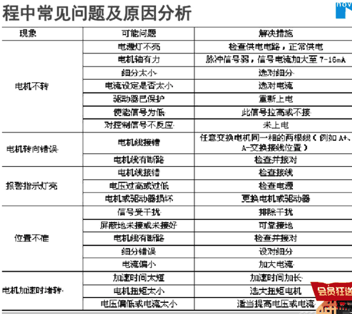

绕组串连时可工作在较高电压、较小电流环境下；并连时，可工作在低电压、大电流环境下。 串联 低速 力矩大 并联 高速性能好
所以两相电机配两相步进驱动器，四相八线电机有并联、串联、单极型三种接法。
并联接法：四相绕组两两相并，绕组的电阻与电感成倍减小，电机运行时加速性能好，高速带载力矩大，但是电机需要输入两倍于额定电流的电流，发热较大，对驱动器输出能力要求相应提高。
串联使用时，绕组的电阻与电感成倍的增大，电机低速运行时稳定，噪音和发热较小，对驱动器要求不高，但高速力矩损耗大。所以用户可根据要求来选择四相八线的步进电机接线方法。
两相步进电机在定子上只有两个绕组，有四根出线，整步为1.8°，半步为0.9°。在驱动器中，只要对两相绕组电流通断和电流方向进行控制就可以了。而四相步进电机在定子上有四个绕组，有八根出线，整步为0.9°，半步为0.45°，不过驱动器中需要对四个绕组进行控制，电路相对复杂了。




差分方式典型接线方法
电压和电流与转速、转矩的关系 R① 步进电机一定时, 供结驱动器的电压値对电机性能影响大.
电压越高,步进电机能产生的力矩越大 ,越有利于需要高速应
用的场合 ,但电机的发热随着电压、电流的增加而加大,所以
要注意电机的温度不能超讨S大限値。
② 一个可供参考的经验值:步进电机驱动器的输入电压服设定在步进
电机额定电压的3~10倍。建议: 57机座电机采用直流24V-48V, 86机座电机采用直流36 -70V,,110机座电机采用高于直流80V。
1.电机速度的选择
步进电机最大速度f 在600 ~ 800 rpm
交流伺服电机额定速度一在3000 rpm ,最大辖速为5000rpm 机械彳专动系统要根据此参数设计.
2电机定位精度的选择
机械传动比确定后，可根据控制系统的定位精度选择步进电机的步距角及驱 动器的细分等级。
3.电机力矩选择
步进电机的动态力矩一下子很难确定，我们往 矩选择的依据是电机工作的员载,而员载可分为 起动时（f 由低速时二种负载均要考虑， 速运侦进只要考虑摩擦负载. .静____
一旦选定.电机的机座及长度便 来（几何尺寸）
电机的静力矩.静力 摩擦员载二种.直接
，恒
2-3倍内好，静力矩
6、为什么步进电机的力矩会随转速升高而下降？
当步进电机转动时，电机各相瓶的电感将形成f 反向电动势；频率越 高.反向电动势越大.在它的作用下，电机随频率（或速度）的增大而相 电流减小,从而导致力庖下降.
7、/徵两相驱动合式步进电机与驱动器的串联接法和并联接法有什么区别？
率艘法f 在电机转速较低的场合使用.并联接在电机转速较高 的场合使用（又祢扃速接法）
8、如何用简单的方法调整两相步进电机通电后的转动方向？ 只需将电机与驱动器接线的A +和A-（或者8+和B-）对调即可.
程中常见问题及原因分析